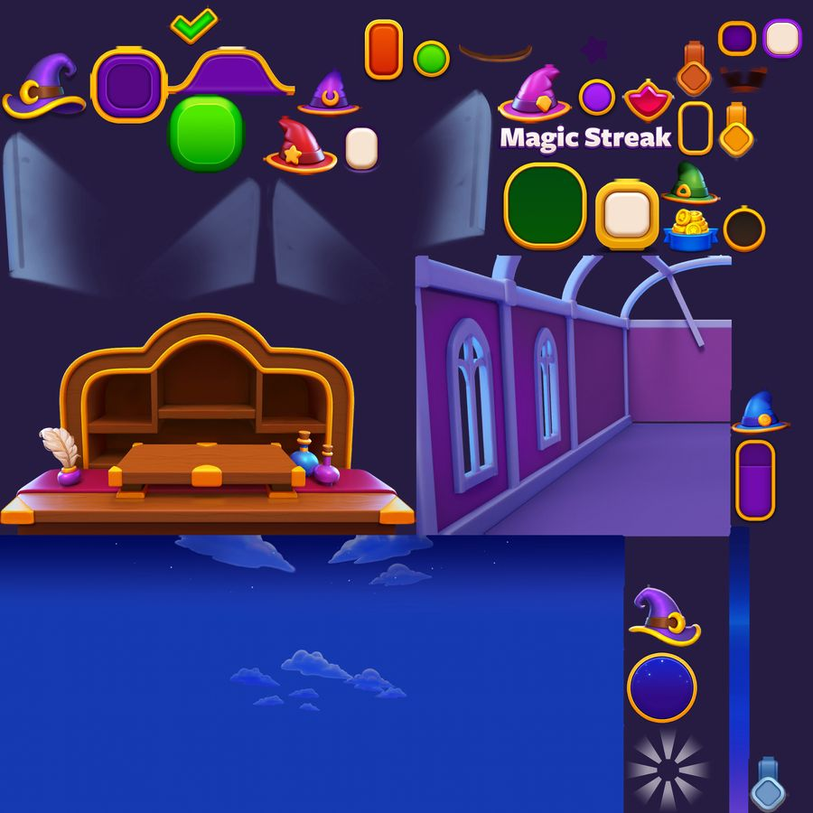

Magic Streak Tournament (Giải chuỗi thắng)
Kết hợp cuộc đua hạng với phần thưởng tiến độ cá nhân, cho người chơi hai lý do tiếp tục dù không đứng đầu.
Chưa có case chính trong hai lượt review 15–16/11. Nội dung theo mã/config; ảnh ngữ cảnh không được tính thành playtest tính năng. Xem bằng chứng và phần còn thiếu.
Thiết kế chi tiết
Tóm tắt thiết kế
Kết hợp cuộc đua hạng với phần thưởng tiến độ cá nhân, cho người chơi hai lý do tiếp tục dù không đứng đầu.
Thắng chuỗi → nhân điểm → đẩy rank và thanh cá nhân → nhận mốc → nhận thưởng cuối giải.
Thiết kế đọc từ dossier và nguồn đã đối chiếu. Outcome là expected; câu ghi round2 là actual theo case, không phải full-feature pass.
Chưa có ảnh chụp màn hình cho tính năng này trong nguồn đã kiểm. Ảnh tài nguyên (nếu có) nằm ở hồ sơ hình ảnh; không thay cho screenshot playtest.
Luồng người chơi từng bước
- 01
Ghi điểm chuỗi
Người chơi và hệ thốngThắng level và theo dõi multiplier.
Điều kiện / luật: Hệ số 1/5/10/25/100 áp điểm giải và thanh cá nhân theo source.
Kết quả theo đặc tả: Tiến độ và rank cùng thay đổi nhưng quyền thưởng khác nhau.
- 02
Nhận mốc cá nhân
Người chơi và hệ thốngĐạt các mốc ProgressbarRewardSteps.
Điều kiện / luật: Có 10 mốc từ 10 điểm/20 coin đến 1000 điểm/1000 coin trong default.
Kết quả theo đặc tả: Không phải đợi kết giải mới có mọi phần thưởng.
- 03
Chốt thưởng rank
Người chơi và hệ thốngMở result khi giải kết thúc.
Điều kiện / luật: Default rank 1/2/3 là 2000/1000/500 coin; rank 4–10 mỗi người 100.
Kết quả theo đặc tả: Thưởng rank tách khỏi mốc đã nhận.
Quy tắc cần nắm
| Quy tắc | Hành vi theo nguồn | Căn cứ |
|---|---|---|
| Ghi điểm chuỗi | Hệ số 1/5/10/25/100 áp điểm giải và thanh cá nhân theo source. | |
| Nhận mốc cá nhân | Có 10 mốc từ 10 điểm/20 coin đến 1000 điểm/1000 coin trong default. | |
| Chốt thưởng rank | Default rank 1/2/3 là 2000/1000/500 coin; rank 4–10 mỗi người 100. |
Số liệu & phần thưởng
Phần thưởng
PHẦN THƯỞNG THEO HẠNG (TournamentRewards)
| Hạng | Điều kiện | Phần thưởng |
|---|---|---|
| Hạng 1 | Đứng đầu bảng khi hết giờ |  2000Coin 2000Coin |
| Hạng 2 | Vị trí thứ hai | 1000Coin |
| Hạng 3 | Vị trí thứ ba | 500Coin |
| Hạng 4–10 | Trong giới hạn OtherRanksLimit = 10 |  100 coin mỗi người 100 coin mỗi người |
| Hạng 11 trở đi | Ngoài OtherRanksLimit | Không có thưởng |
THANH TIẾN ĐỘ CÁ NHÂN 10 MỐC (ProgressbarRewardSteps)
| Mốc | Score | Phần thưởng |
|---|---|---|
| Mốc 1 | 10 | 20Coin |
| Mốc 2 | 50 |  15 phút Limitless Life 15 phút Limitless Life |
| Mốc 3 | 100 | 100Coin |
| Mốc 4 | 200 |  1 Shuffle 1 Shuffle |
| Mốc 5 | 200 |  1 Undo 1 Undo |
| Mốc 6 | 500 | 300Coin |
| Mốc 7 | 300 | 30 phút Limitless Life |
| Mốc 8 | 800 | 500Coin |
| Mốc 9 | 400 |  1 Extra Bottle 1 Extra Bottle |
| Mốc 10 | 1000 | 1000Coin |
BẬC HỆ SỐ NHÂN (Multipliers)
| Bậc (index) | Hệ số | Đạt khi |
|---|---|---|
| 0 | ×1 | Khởi điểm hoặc sau khi thua |
| 1 | ×5 | Sau 1 trận thắng |
| 2 | ×10 | Sau 2 trận thắng liên tiếp |
| 3 | ×25 | Sau 3 trận thắng liên tiếp |
| 4 | ×100 | Sau 4 trận thắng liên tiếp (bậc cao nhất) |
CẤU HÌNH MẶC ĐỊNH (MagicStreakTournamentConfigModel.json)
| Khoá | Giá trị mặc định | Ý nghĩa |
|---|---|---|
| IsTournamentEnable | false | Bật/tắt giải Magic Streak |
| IsProgressBarEnable | false | Bật thanh tiến độ cá nhân 10 mốc |
| IsBannerEnable | true | Bật banner ở màn thắng/thua level |
| FirstLevelToShow | 25 | Level tối thiểu |
| EventType | 1 | TournamentType gửi backend |
| ShouldOpenPopUpAutomaticallyOnRankUp | true | Tự mở popup khi thăng hạng |
| ShowPopUpIntervalOnRankUp | 10 | Số level tối thiểu giữa hai lần tự mở popup |
| Multipliers | [1, 5, 10, 25, 100] | 5 bậc hệ số nhân điểm |
| TournamentRewards.OtherRanksLimit | 10 | Hạng cuối cùng còn được thưởng |
CẤU HÌNH BẢN CŨ (StreakTournamentConfigModel.json)
| Khoá | Giá trị | Ghi chú |
|---|---|---|
| TournamentDurationInHours | 24 | Độ dài một giải |
| Rewards.FirstRankCoinRewardAmount | 2000 coin | Trùng bản mới |
| Rewards.SecondRankCoinRewardAmount | 1000 coin | Trùng bản mới |
| Rewards.ThirdRankCoinRewardAmount | 500 coin | Trùng bản mới |
| Rewards.OtherRanksCoinRewardAmount | 100 coin | Trùng bản mới |
| Rewards.OtherRanksLimit | 10 | Trùng bản mới |
| Multipliers.Multiplier1..5 | 1, 5, 10, 25, 100 | Trùng bản mới |
| ShowPopUpIntervalOnRankUp | 1 | Khác bản mới (10) |
MÁY TRẠNG THÁI (MagicStreakStateType)
| Giá trị | Trạng thái | Ý nghĩa |
|---|---|---|
| 0 | Disable | Server tắt giải |
| 1 | ProgressNotEnough | Level dưới FirstLevelToShow |
| 2 | NoCache | Chưa từng fetch được bảng |
| 3 | NotIntroduced | Chưa xem giới thiệu |
| 4 | InProgress | Giải đang chạy |
| 5 | LocalTimeIsUp | Client tính là hết giờ |
| 6 | RemoteTimeIsUp | Server báo isFinished |
| 7 | ClaimedLocally | Đã nhận thưởng phía client |
TRẠNG THÁI POPUP VÀ NGUỒN MỞ
| Enum | Giá trị | Ý nghĩa |
|---|---|---|
| MagicStreakTournamentPopupStateType | Disable=0, NoInternetConnection=1, NotIntroduced=2, InProgress=3, TournamentResult=4 | Layout popup |
| MagicStreakTournamentPopupImpressionSource | LobbyIcon=0, TournamentStart=1, TournamentEnd=2, RankUp=3, None=4 | Nguồn mở popup |
| MagicStreakTournamentBannerPlaceType | Win=0, Lose=1 | Vị trí banner ở màn kết thúc level |
ENDPOINT BACKEND
| Tên | Đường dẫn | Mục đích |
|---|---|---|
| magicStreakTournamentGetUrl | {base}/v1/get-magicstreak-leaderboard | Lấy bảng xếp hạng giải |
| magicStreakTournamentSetScoreUrl | {base}/v1/set-magicstreak-tournament-points | Đẩy điểm |
| magicStreakTournamentClaimUrl | {base}/v1/claim-magicstreak-tournament | Nhận thưởng hạng |
| Sync block | "MagicStreakModel" | Đồng bộ điểm hệ số số lần vô địch |
Phần thưởng theo code
| Ngữ cảnh | Phần thưởng | Evidence |
|---|---|---|
| Hạng 1 giải | 2000Coin | MagicStreakTournamentConfigModel.json TournamentRewards.FirstRankRewardModel |
| Hạng 2 | 1000Coin | MagicStreakTournamentConfigModel.json TournamentRewards.SecondRankRewardModel |
| Hạng 3 | 500Coin | MagicStreakTournamentConfigModel.json TournamentRewards.ThirdRankRewardModel |
| Hạng 4-10 | 100 Coin mỗi người (OtherRanksLimit = 10) | MagicStreakTournamentConfigModel.json TournamentRewards.OtherRanksRewardModel |
| Thanh tiến độ cá nhân 10 mốc | 20 Coin → Life 15' → 100 Coin → Shuffle → Undo → 300 Coin → Life 30' → 500 Coin → ExtraBottle → 1000 Coin | MagicStreakTournamentConfigModel.json ProgressbarRewardSteps |
Số liệu chính
| Chỉ số | Giá trị | Nguồn |
|---|---|---|
| Thưởng hạng 1 | 2000 coin | TournamentRewards.FirstRankRewardModel |
| Thưởng hạng 2 | 1000 coin | TournamentRewards.SecondRankRewardModel |
| Thưởng hạng 3 | 500 coin | TournamentRewards.ThirdRankRewardModel |
| Thưởng hạng 4–10 | 100 coin mỗi người | TournamentRewards.OtherRanksRewardModel |
| Giới hạn hạng còn thưởng | 10 | TournamentRewards.OtherRanksLimit |
| Số mốc thanh tiến độ | 10 | MagicStreakTournamentConfigModel.json: ProgressbarRewardSteps |
| Score mốc đầu / mốc cuối | 10 → 1000 | ProgressbarRewardSteps[0].Score / [9].Score |
| Thưởng mốc đầu / mốc cuối | 20 coin → 1000 coin | ProgressbarRewardSteps[0] / [9] |
| Bậc hệ số nhân | [1, 5, 10, 25, 100] | MagicStreakTournamentConfigModel.json: Multipliers |
| Level mở khoá | 25 | MagicStreakTournamentConfigModel.json: FirstLevelToShow |
| Bật/tắt giải mặc định | IsTournamentEnable = false | MagicStreakTournamentConfigModel.json |
| Bật thanh tiến độ mặc định | IsProgressBarEnable = false | MagicStreakTournamentConfigModel.json |
| Bật banner mặc định | IsBannerEnable = true | MagicStreakTournamentConfigModel.json |
| Giãn cách tự mở popup khi thăng hạng | 10 level (bản cũ: 1) | ShowPopUpIntervalOnRankUp |
| Thời lượng trong asset legacy | 24giờ (legacy asset; không xác nhận duration runtime) | StreakTournamentConfigModel.TournamentDurationInHours |
| Loại sự kiện | EventType = 1 | MagicStreakTournamentConfigModel.json |
| Số trạng thái giải | 8 (0–7) | MagicStreakStateType |
| Số layout popup | 5 (0–4) | MagicStreakTournamentPopupStateType |
| Số nguồn mở popup | 5 (LobbyIcon, TournamentStart, TournamentEnd, RankUp, None) | MagicStreakTournamentPopupImpressionSource |
| Endpoint lấy bảng | {base}/v1/get-magicstreak-leaderboard | magicStreakTournamentGetUrl |
| Endpoint đẩy điểm | {base}/v1/set-magicstreak-tournament-points | magicStreakTournamentSetScoreUrl |
| Endpoint nhận thưởng | {base}/v1/claim-magicstreak-tournament | magicStreakTournamentClaimUrl |
| Số trường trong MagicStreakModel | 7 | MagicStreakDataService.SerializeModelForSync |
| Số mốc lastSeen được cache | 6 (_lastSeenProgressbarRewardScore, _lastSeenProgressbarRewardIndex, _lastSeenTournamentScore, _lastSeenMultiplierIndex, _lastSeenRank, _lastSeenLevel) | MagicStreakDataService |
Các quyết định trong luồng
| Tình huống | Cách xử lý theo nguồn | Căn cứ |
|---|---|---|
| Vì sao không gộp với MagicStreak GAE? | GAE là đường mốc cá nhân; Tournament có backend leaderboard và reward rank độc lập dù cùng multiplier. | Nhận định thiết kế dựa trên cơ chế, không phải kết quả A/B. |
Nhánh lỗi và phục hồi
| Điều kiện | Hành vi mong đợi | Phạm vi đã kiểm |
|---|---|---|
| Gián đoạn hoặc kết thúc Magic Streak Tournament | Lỗi gửi score cần giữ dữ liệu local/server tách rõ, không lấy UI rank cache làm xác nhận sync. | Đọc source/UC; không thực hiện runtime mới trong lượt biên tập. |
Nhận định & vận dụng
GAE là đường mốc cá nhân; Tournament có backend leaderboard và reward rank độc lập dù cùng multiplier.
Phân tích thiết kế, chưa đo retention/conversion.
Ảnh chụp bổ sung & nguồn bằng chứng
Chưa có screenshot trong nguồn hiện có; giữ mục này để bổ sung khi có bằng chứng.
Case đầy đủ: expected, actual và ledger · Ảnh lịch sử và tài nguyên gốc
Tổng quan & điều kiện mở
Mô tả
- Magic Streak Tournament là biến thể giải đấu của cơ chế chuỗi thắng: điểm được đẩy lên bảng xếp hạng có thời hạn thay vì chỉ tích cho bản thân.
- Điểm cộng mỗi lần thắng bằng hệ số chuỗi hiện tại, dùng đúng 5 bậc như bản GAE: 1, 5, 10, 25, 100.
- Người chơi đồng thời tranh hạng để lấy thưởng theo hạng và leo một thanh tiến độ cá nhân 10 mốc.
- Thanh tiến độ trải từ 10 điểm / 20 coin ở mốc đầu tới 1000 điểm / 1000 coin ở mốc cuối.
- Thua level làm mất hệ số nhân nhưng không trừ điểm giải hay điểm thanh tiến độ đã tích.
- Popup có thể tự bật khi thăng hạng, với giãn cách tối thiểu 10 level để không spam người chơi.
- Banner nhắc thứ hạng hiện ngay ở màn thắng (Win) và màn thua (Lose) của mỗi level.
- Bảng xếp hạng có cả người thật và bot — analytics tách riêng real_user_count và bot_count.
- Khi mất mạng, ChoosePlayerScore giữ điểm local trên UI cho tới khi đồng bộ được với server.
- Đây là tính năng tách riêng khỏi Magic Streak (GAE) vì luồng, dữ liệu và endpoint hoàn toàn khác.
Mở khóa & điểm vào
MagicStreakStateService.GetState(): Disable(0) nếu MagicStreakTournamentConfigModel.IsTournamentEnable == false; ProgressNotEnough(1) nếu level < FirstLevelToShow; NoCache(2); NotIntroduced(3); InProgress(4); LocalTimeIsUp(5); RemoteTimeIsUp(6); ClaimedLocally(7). Client default: IsTournamentEnable=false, IsProgressBarEnable=false, IsBannerEnable=true, FirstLevelToShow=25, EventType=1 (Resources/defaultconfigs/MagicStreakTournamentConfigModel.json). Cấu hình cũ StreakTournamentConfigModel.json còn giữ TournamentDurationInHours = 24.
Điểm vào:
- Nút lobby Magic Streak Tournament (ShouldShowLobbyIcon)
- Banner (ShouldShowBanner, IsBannerEnable = true) với MagicStreakTournamentBannerPlaceType: Win(0) hiện ở màn thắng, Lose(1) ở màn thua
- Popup tự bật khi thăng hạng (ShouldOpenPopUpAutomaticallyOnRankUp, source RankUp)
- Popup tự bật khi giải bắt đầu/kết thúc (source TournamentStart / TournamentEnd)
- Popup xác nhận thoát level (ShouldShowAreYouSure)
- Thanh tiến độ cá nhân trong popup (IsProgressBarEnable)
Các sự kiện liên quan
Luồng chi tiết theo nguồn
Cách hoạt động
- Initialize() nạp Multipliers = [1, 5, 10, 25, 100] và CreateProgressbarRewards() dựng 10 mốc từ ProgressbarRewardSteps.
- InitializeData/IntervalUpdate kiểm tra ShouldSendGetRequest(), rồi SendGetRequest tới magicStreakTournamentGetUrl (/v1/get-magicstreak-leaderboard).
- Response mang TournamentId, TournamentType, Players, startTime, finishTime, isClaimed, isFinished, userScore.
- ChangeTournamentCache(response) ghi cache và UpdateLeaderboard() dựng _cachedLeaderboard; ProfileSpriteCacheService nạp avatar từng dòng.
- Vào level: CacheMultiplierDataOnLevelStart() lưu hệ số đầu level để chạy hoạt ảnh đúng.
- Thắng level: IncreaseAllScores() cộng đồng thời điểm giải và điểm thanh tiến độ, mỗi bên tăng bằng hệ số hiện tại, rồi IncreaseMultiplier() nâng bậc.
- Thua level: ResetMultiplierOnLevelEnd() đưa MultiplierIndex về 0; điểm đã tích giữ nguyên.
- SendSetScoreRequest() đẩy điểm tới magicStreakTournamentSetScoreUrl (/v1/set-magicstreak-tournament-points).
- ChoosePlayerScore(isMe, isFinished, localScore, remoteScore) quyết định lấy điểm local hay remote cho từng dòng bảng để UI luôn mượt.
- Thanh tiến độ cá nhân: GetCurrentProgressbarRewardIndex() và GetCurrentProgressbarRatio() vẽ tiến độ; vượt mốc thì thưởng vào GetEarnedProgressbarRewards().
- Về lobby, ShouldPlayProgressbarRewardAnimationLobbyReturn() cho thưởng bung ra đúng một lần rồi ResetProgressbarLobbyRewardAnimationCache().
- Thăng hạng: IsElapsedNLevelsSinceLastSeen() so số level đã chơi với ShowPopUpIntervalOnRankUp (10) trước khi tự mở popup với source RankUp (3).
- Hết giờ: state chuyển LocalTimeIsUp(5) hoặc RemoteTimeIsUp(6); AssignTournamentRewardsAndSetRanks(sortedLeaderboard) sắp hạng và gán thưởng theo TournamentRewards.
- Popup mở với source TournamentEnd (2) và layout TournamentResult (4); GetTournamentReward() và GetFinalRankText() hiển thị kết quả (fallback '-').
- Bấm Claim: ClaimTournamentReward() gọi magicStreakTournamentClaimUrl (/v1/claim-magicstreak-tournament), IncreaseTournamentWinCount() khi vô địch, state chuyển ClaimedLocally(7).
Luồng chi tiết theo code
Initialize() nạp _multipliers từ MagicStreakTournamentConfigModel.Multipliers = [1, 5, 10, 25, 100] và CreateProgressbarRewards() dựng danh sách mốc từ ProgressbarRewardSteps. InitializeData/IntervalUpdate → MagicStreakStateService.ShouldSendGetRequest() → TryFetchCurrentEvent() → CreateRequestModel() → FetchCurrentEvent() gọi MagicStreakRemoteService.SendGetRequest(MagicStreakTournamentRequestModel) tới magicStreakTournamentGetUrl (/v1/get-magicstreak-leaderboard). Response MagicStreakTournamentResponse{TournamentId, TournamentType, Players, startTime, finishTime, isClaimed, isFinished, userScore}. ChangeTournamentCache(response) ghi MagicStreakTournamentModel{TournamentId, FinishTime, StartTime, IsFinished, TournamentScore, Players}; UpdateLeaderboard() dựng _cachedLeaderboard; ChoosePlayerScore(isMe, isFinished, localScore, remoteScore) quyết định lấy điểm local hay remote cho từng dòng (giữ UI mượt khi điểm chưa sync). Gameplay: CacheMultiplierDataOnLevelStart() lưu hệ số đầu level; thắng level → IncreaseAllScores() gọi IncreaseTournamentScore(scoreIncrement) và IncreaseProgressbarRewardScore(scoreIncrement) với scoreIncrement = hệ số hiện tại, rồi IncreaseMultiplier() nâng bậc; thua level → ResetMultiplierOnLevelEnd() đưa hệ số về 1. SendSetScoreRequest() đẩy điểm tới magicStreakTournamentSetScoreUrl (/v1/set-magicstreak-tournament-points). Thanh tiến độ cá nhân: GetCurrentProgressbarRewardIndex(), GetCurrentProgressbarRewardStepScore(), GetCurrentProgressbarRewardStepMaxScore(), GetCurrentProgressbarRatio(), GetEarnedProgressbarRewards(); ShouldPlayProgressbarRewardAnimationLobbyReturn() và ResetProgressbarLobbyRewardAnimationCache() điều khiển animation. Kết thúc: GetRemainingSeconds()/GetEndDate() → LocalTimeIsUp(5)/RemoteTimeIsUp(6); AssignTournamentRewardsAndSetRanks(sortedLeaderboard) và AssignTournamentRewardToPlayer(player, rankIndex, rewardsConfig) gán thưởng theo TournamentRewards; GetTournamentReward()/GetFinalRankText() cho UI; ClaimTournamentReward() → SendClaimRequest() tới magicStreakTournamentClaimUrl (/v1/claim-magicstreak-tournament); IncreaseTournamentWinCount() tăng TournamentWinCount khi vô địch; state → ClaimedLocally(7); ScheduleLeaderboardFetchOnTimerEnd() tự fetch giải mới.
Use case (16)
Đặc tả UC mô tả hành vi theo nguồn. Kết quả mong đợi không phải kết quả đã chạy; case quan sát được liên kết riêng ở từng UC.
Bấm vào từng use case để mở. Mở/đóng tất cả
UC-01 Kiểm tra điều kiện và hiện icon/banner
Chưa có case trực tiếp trong hai lượt review 15–16/11.
Các bước- MagicStreakStateService.GetConfig() lấy MagicStreakTournamentConfigModel
- GetState() trả Disable(0)/ProgressNotEnough(1)/NoCache(2)/NotIntroduced(3)/InProgress(4)/LocalTimeIsUp(5)/RemoteTimeIsUp(6)/ClaimedLocally(7)
- MagicStreakService.ShouldShowLobbyIcon() / ShouldShowBanner() (IsBannerEnable) / ShouldShowScrollBar()
- GetLiveOpsStateForLevelEvent() cấp trạng thái cho analytics level
| Actor | System |
|---|---|
| Trigger | Vào lobby / IntervalUpdate |
| Điều kiện | RemoteConfigs sẵn sàng |
| Kết quả mong đợi theo nguồn | Icon + banner hiện/ẩn ở lobby và màn kết thúc level |
| Quy tắc / số liệu | Client default: IsTournamentEnable=false, IsBannerEnable=true, FirstLevelToShow=25 |
| Bằng chứng đặc tả | MagicStreakStateService.GetState; MagicStreakStateService.ShouldShowLobbyIcon; MagicStreakService.ShouldShowBanner; MagicStreakService.ShouldShowScrollBar; MagicStreakService.GetLiveOpsStateForLevelEvent |
UC-02 Lấy bảng xếp hạng giải
Chưa có case trực tiếp trong hai lượt review 15–16/11.
Các bước- MagicStreakService.TryFetchCurrentEvent() → CreateRequestModel() → FetchCurrentEvent()
- MagicStreakRemoteService.SendGetRequest(MagicStreakTournamentRequestModel) tới magicStreakTournamentGetUrl (/v1/get-magicstreak-leaderboard)
- Response MagicStreakTournamentResponse{TournamentId, TournamentType, Players, startTime, finishTime, isClaimed, isFinished, userScore}
- ChangeTournamentCache(response) → MagicStreakDataService.SetTournamentCache(model)
- UpdateLeaderboard() dựng _cachedLeaderboard; ProfileSpriteCacheService nạp avatar
| Actor | Server |
|---|---|
| Trigger | InitializeData / IntervalUpdate khi ShouldSendGetRequest() |
| Điều kiện | Sự kiện bật |
| Kết quả mong đợi theo nguồn | Cache bảng xếp hạng và điểm của mình |
| Quy tắc / số liệu | MagicStreakStateService.IsFinishedBeforeIntroduction() xử lý trường hợp giải kết thúc trước khi người chơi kịp thấy |
| Bằng chứng đặc tả | MagicStreakService.TryFetchCurrentEvent; MagicStreakService.CreateRequestModel; MagicStreakService.FetchCurrentEvent; MagicStreakRemoteService.SendGetRequest; MagicStreakService.ChangeTournamentCache; MagicStreakService.UpdateLeaderboard; MagicStreakStateService.IsFinishedBeforeIntroduction |
UC-03 Thắng level → cộng điểm giải và điểm thanh tiến độ theo hệ số
Chưa có case trực tiếp trong hai lượt review 15–16/11.
Các bước- CacheMultiplierDataOnLevelStart() lưu hệ số đầu level cho animation
- MagicStreakService.IncreaseAllScores() → IncreaseTournamentScore(scoreIncrement) và IncreaseProgressbarRewardScore(scoreIncrement)
- scoreIncrement = GetCurrentMultiplier() (tra _multipliers = [1, 5, 10, 25, 100] theo GetCurrentMultiplierIndex())
- IncreaseMultiplier() nâng MagicStreakModel.MultiplierIndex
- GetStreakCountForAnimation() / GetAddedTournamentScoreForAnimation() cho hoạt ảnh
- MagicStreakDataService.SetTournamentScore(newScore) / SetProgressbarRewardScore(rewardScore)
| Actor | Player |
|---|---|
| Trigger | Hoàn thành level |
| Điều kiện | MagicStreakStateService.ShouldIncreaseScore() && CanEarnTournamentScore() |
| Kết quả mong đợi theo nguồn | Điểm giải và điểm thanh tiến độ cùng tăng theo hệ số chuỗi |
| Quy tắc / số liệu | Cùng 5 bậc hệ số như bản GAE |
| Bằng chứng đặc tả | MagicStreakService.IncreaseAllScores; MagicStreakService.IncreaseTournamentScore; MagicStreakService.IncreaseProgressbarRewardScore; MagicStreakService.IncreaseMultiplier; MagicStreakService.GetCurrentMultiplier; MagicStreakDataService.SetTournamentScore |
UC-04 Thua level → mất hệ số nhân
Chưa có case trực tiếp trong hai lượt review 15–16/11.
Các bước- MagicStreakService.ResetMultiplierOnLevelEnd() đưa MultiplierIndex về 0 (hệ số 1)
- ResetStreakCountForAnimation() dọn dữ liệu hoạt ảnh
- Điểm giải và điểm thanh tiến độ đã tích KHÔNG bị trừ
| Actor | Player |
|---|---|
| Trigger | Kết thúc level không thắng |
| Điều kiện | - |
| Kết quả mong đợi theo nguồn | Tốc độ tích điểm giảm, người chơi phải xây lại chuỗi |
| Quy tắc / số liệu | - |
| Bằng chứng đặc tả | MagicStreakService.ResetMultiplierOnLevelEnd; MagicStreakService.ResetStreakCountForAnimation; MagicStreakService.GetCurrentMultiplierIndex |
UC-05 Cảnh báo trước khi thoát level
Chưa có case trực tiếp trong hai lượt review 15–16/11.
Các bước- MagicStreakService.ShouldShowAreYouSure()
- Hiển thị hệ số sắp mất và vị trí trên bảng
| Actor | Player |
|---|---|
| Trigger | Bấm thoát trong level |
| Điều kiện | Hệ số nhân đang cao |
| Kết quả mong đợi theo nguồn | Thúc đẩy dùng booster/Play-On |
| Quy tắc / số liệu | - |
| Bằng chứng đặc tả | MagicStreakService.ShouldShowAreYouSure |
UC-06 Đẩy điểm lên server
Chưa có case trực tiếp trong hai lượt review 15–16/11.
Các bước- MagicStreakService.SendSetScoreRequest()
- MagicStreakRemoteService.SendSetScoreRequest(MagicStreakTournamentRequestModel) tới magicStreakTournamentSetScoreUrl (/v1/set-magicstreak-tournament-points)
- ChoosePlayerScore(isMe, isFinished, localScore, remoteScore) đảm bảo UI hiển thị điểm cao hơn giữa local và remote
| Actor | System |
|---|---|
| Trigger | Sau khi tăng điểm / theo nhịp |
| Điều kiện | MagicStreakStateService.ShouldSendStat() == true |
| Kết quả mong đợi theo nguồn | Điểm chính thức trên bảng; nếu lỗi, điểm local vẫn hiển thị |
| Quy tắc / số liệu | - |
| Bằng chứng đặc tả | MagicStreakService.SendSetScoreRequest; MagicStreakRemoteService.SendSetScoreRequest; MagicStreakService.ChoosePlayerScore; MagicStreakStateService.ShouldSendStat |
UC-07 Thanh tiến độ cá nhân 10 mốc
Chưa có case trực tiếp trong hai lượt review 15–16/11.
Các bước- MagicStreakService.CreateProgressbarRewards() dựng từ ProgressbarRewardSteps (Score + RewardModel)
- GetCurrentProgressbarRewardIndex() / GetCurrentProgressbarRewardStepScore() / GetCurrentProgressbarRewardStepMaxScore() / GetNeededScoreForProgressbarCurrentStep()
- GetCurrentProgressbarRatio() / GetLastProgressbarRatio() cho animation
- GetProgressbarAllRewards() / GetProgressbarCurrentReward() / GetEarnedProgressbarRewards()
- GetClaimedProgressbarStepRank() / GetProgressbarClaimedStepReward() cho popup nhận thưởng
- CacheLastSeenProgressbarValues() và ResetProgressbarRewardScoreAndMultiplierIndex() khi sang giải mới
| Actor | Player |
|---|---|
| Trigger | Điểm tăng |
| Điều kiện | IsProgressBarEnable == true |
| Kết quả mong đợi theo nguồn | Nhận 20 Coin → 1000 Coin cùng Life vô hạn, Shuffle, Undo, ExtraBottle theo 10 mốc |
| Quy tắc / số liệu | Client default IsProgressBarEnable = false (phải bật bằng remote config) |
| Bằng chứng đặc tả | MagicStreakService.CreateProgressbarRewards; MagicStreakService.GetCurrentProgressbarRewardIndex; MagicStreakService.GetEarnedProgressbarRewards; MagicStreakService.GetProgressbarAllRewards; MagicStreakService.CacheLastSeenProgressbarValues |
UC-08 Hoạt ảnh nhận thưởng thanh tiến độ khi về lobby
Chưa có case trực tiếp trong hai lượt review 15–16/11.
Các bước- MagicStreakService.ShouldPlayProgressbarRewardAnimationLobbyReturn()
- ResetProgressbarLobbyRewardAnimationCache() sau khi chạy xong
- MagicStreakDataService.SetLastSeenProgressbarRewardIndex(index) / SetLastSeenProgressbarRewardScore(score)
| Actor | System |
|---|---|
| Trigger | Về lobby sau khi vượt mốc |
| Điều kiện | - |
| Kết quả mong đợi theo nguồn | Người chơi thấy thưởng bung ra đúng một lần |
| Quy tắc / số liệu | - |
| Bằng chứng đặc tả | MagicStreakService.ShouldPlayProgressbarRewardAnimationLobbyReturn; MagicStreakService.ResetProgressbarLobbyRewardAnimationCache; MagicStreakDataService.SetLastSeenProgressbarRewardIndex |
UC-09 Xem bảng xếp hạng và thứ hạng
Chưa có case trực tiếp trong hai lượt review 15–16/11.
Các bước- MagicStreakService.GetLeaderboard() trả List<MagicStreakTournamentLeaderboardPlayerViewModel>
- GetRank() / GetRankIndex() / GetLastSeenRank() / GetScore() / GetLastSeenScore()
- MagicStreakDataService.SetLastSeenRank(rank) / SetLastSeenTournamentScore(score)
- GetFinalRankText() trả text hạng cuối (fallback '-')
- EventSender: streak_leaderboard_impression với current_rank, total_users, real_user_count, bot_count
| Actor | Player |
|---|---|
| Trigger | Mở popup giải |
| Điều kiện | Có cache bảng |
| Kết quả mong đợi theo nguồn | Người chơi thấy vị trí và khoảng cách với đối thủ |
| Quy tắc / số liệu | Bảng có cả bot (real_user_count vs total_users trong analytics) |
| Bằng chứng đặc tả | MagicStreakService.GetLeaderboard; MagicStreakService.GetRank; MagicStreakService.GetRankIndex; MagicStreakService.GetFinalRankText; MagicStreakDataService.SetLastSeenRank |
UC-10 Popup tự bật khi thăng hạng
Chưa có case trực tiếp trong hai lượt review 15–16/11.
Các bước- MagicStreakService.IsElapsedNLevelsSinceLastSeen() so số level đã chơi với ShowPopUpIntervalOnRankUp
- MagicStreakDataService.SetLastSeenLevel(level) / GetLastSeenLevel()
- MagicStreakStateService.ShouldForceOpen() và GetPopupState() trả MagicStreakTournamentPopupStateType: Disable(0), NoInternetConnection(1), NotIntroduced(2), InProgress(3), TournamentResult(4)
- Mở popup với MagicStreakTournamentPopupImpressionSource.RankUp(3)
- CacheLastSeenData() / ResetLastSeenData() quản lý mốc so sánh
| Actor | System |
|---|---|
| Trigger | Thứ hạng tăng so với lần xem trước |
| Điều kiện | ShouldOpenPopUpAutomaticallyOnRankUp == true |
| Kết quả mong đợi theo nguồn | Người chơi được khoe thứ hạng mới nhưng không bị spam (giãn cách 10 level) |
| Quy tắc / số liệu | ShowPopUpIntervalOnRankUp = 10 (client default). Bản cấu hình cũ StreakTournamentConfigModel dùng giá trị 1. |
| Bằng chứng đặc tả | MagicStreakService.IsElapsedNLevelsSinceLastSeen; MagicStreakStateService.ShouldForceOpen; MagicStreakStateService.GetPopupState; MagicStreakService.CacheLastSeenData; MagicStreakDataService.SetLastSeenLevel |
UC-11 Kết thúc giải và gán thưởng theo hạng
Chưa có case trực tiếp trong hai lượt review 15–16/11.
Các bước- MagicStreakService.GetRemainingSeconds() / GetEndDate() / GetStartTimeAsUnix()
- State → LocalTimeIsUp(5) / RemoteTimeIsUp(6)
- AssignTournamentRewardsAndSetRanks(sortedLeaderboard) sắp xếp và gán hạng
- AssignTournamentRewardToPlayer(player, rankIndex, rewardsConfig) dùng TournamentRewards{FirstRankRewardModel, SecondRankRewardModel, ThirdRankRewardModel, OtherRanksRewardModel, OtherRanksLimit}
- GetTournamentReward() trả phần thưởng của mình
- Popup mở với source TournamentEnd(2), state TournamentResult(4)
| Actor | System |
|---|---|
| Trigger | Hết giờ hoặc isFinished = true |
| Điều kiện | - |
| Kết quả mong đợi theo nguồn | Bảng kết quả với thưởng từng hạng |
| Quy tắc / số liệu | Thưởng mặc định: hạng 1 = 2000 Coin, hạng 2 = 1000, hạng 3 = 500, hạng 4 đến OtherRanksLimit (10) = 100 Coin |
| Bằng chứng đặc tả | MagicStreakService.AssignTournamentRewardsAndSetRanks; MagicStreakService.AssignTournamentRewardToPlayer; MagicStreakService.GetTournamentReward; MagicStreakService.GetRemainingSeconds |
UC-12 Nhận thưởng giải
Chưa có case trực tiếp trong hai lượt review 15–16/11.
Các bước- MagicStreakService.ClaimTournamentReward() → SendClaimRequest()
- MagicStreakRemoteService.SendClaimRequest(MagicStreakTournamentRequestModel) tới magicStreakTournamentClaimUrl (/v1/claim-magicstreak-tournament)
- IncreaseTournamentWinCount() → MagicStreakDataService.SetTournamentWinCount(currentWinCount) khi vô địch
- MagicStreakDataService.SetIsClaimedLocally(true) → state ClaimedLocally(7)
- GetTournamentWinCount() hiển thị số lần vô địch
| Actor | Player |
|---|---|
| Trigger | Bấm Claim ở bảng kết quả |
| Điều kiện | MagicStreakStateService.ShouldSendClaimRequest() == true |
| Kết quả mong đợi theo nguồn | Coin vào túi; số cúp tăng |
| Quy tắc / số liệu | - |
| Bằng chứng đặc tả | MagicStreakService.ClaimTournamentReward; MagicStreakService.SendClaimRequest; MagicStreakService.IncreaseTournamentWinCount; MagicStreakDataService.SetIsClaimedLocally; MagicStreakService.GetTournamentWinCount |
UC-13 Nối tiếp giải mới
Chưa có case trực tiếp trong hai lượt review 15–16/11.
Các bước- MagicStreakService.ScheduleLeaderboardFetchOnTimerEnd() dùng SecondTimer đặt lịch fetch
- ResetProgressbarRewardScoreAndMultiplierIndex() reset điểm thanh tiến độ và hệ số
- OnFeatureIntroduced() / MagicStreakDataService.SetIsIntroduced(true) đánh dấu đã giới thiệu
- Thời lượng giải mới lấy từ startTime/finishTime của instance. Không áp TournamentDurationInHours24 của asset legacy StreakTournamentConfigModel cho active consumer MagicStreakTournamentConfigModel.
| Actor | System |
|---|---|
| Trigger | Giải hiện tại kết thúc |
| Điều kiện | - |
| Kết quả mong đợi theo nguồn | Giải mới bắt đầu liền mạch |
| Quy tắc / số liệu | - |
| Bằng chứng đặc tả | MagicStreakService.ScheduleLeaderboardFetchOnTimerEnd; MagicStreakService.ResetProgressbarRewardScoreAndMultiplierIndex; MagicStreakService.OnFeatureIntroduced; MagicStreakDataService.SetIsIntroduced |
UC-14 Banner ở màn thắng/thua level
Chưa có case trực tiếp trong hai lượt review 15–16/11.
Các bước- MagicStreakService.ShouldShowBanner()
- MagicStreakTournamentBannerPlaceType quyết định vị trí: Win(0) ở màn thắng, Lose(1) ở màn thua
- Sprite theo MagicStreakTournamentSpriteConfig
| Actor | System |
|---|---|
| Trigger | Kết thúc một level |
| Điều kiện | IsBannerEnable == true |
| Kết quả mong đợi theo nguồn | Nhắc người chơi về thứ hạng ngay sau mỗi level |
| Quy tắc / số liệu | - |
| Bằng chứng đặc tả | MagicStreakService.ShouldShowBanner; MagicStreakTournamentBannerPlaceType; MagicStreakTournamentSpriteConfig |
UC-15 Offline / lỗi request
Chưa có case trực tiếp trong hai lượt review 15–16/11.
Các bước- MagicStreakTournamentPopupStateType.NoInternetConnection(1) hiển thị popup báo mất mạng
- State giữ NoCache(2) nếu chưa từng fetch được
- ChoosePlayerScore giữ điểm local trên UI cho tới khi sync được
- IntervalUpdate thử lại
| Actor | System |
|---|---|
| Trigger | Get/Set/Claim thất bại |
| Điều kiện | - |
| Kết quả mong đợi theo nguồn | Không mất điểm; các thao tác server bị hoãn |
| Quy tắc / số liệu | - |
| Bằng chứng đặc tả | MagicStreakStateService.GetPopupState; MagicStreakService.ChoosePlayerScore; MagicStreakService.IntervalUpdate; MagicStreakStateService.ShouldSendGetRequest |
UC-16 Đồng bộ dữ liệu
Chưa có case trực tiếp trong hai lượt review 15–16/11.
Các bước- MagicStreakDataService.GetSyncName() = 'MagicStreakModel'
- SerializeModelForSync() gửi MagicStreakModel{MagicStreakTournamentCache, IsClaimedLocally, IsIntroduced, ProgressbarRewardScore, ProgressbarRewardIndex, MultiplierIndex, TournamentWinCount}
- OverwriteModelFromSync(data); DataSynced(); LateUpdate() lưu khi dirty; DeleteData() khi reset
| Actor | Server |
|---|---|
| Trigger | Sync / đổi thiết bị |
| Điều kiện | ISyncable |
| Kết quả mong đợi theo nguồn | Điểm, hệ số, số lần vô địch giữ nguyên khi đổi máy |
| Quy tắc / số liệu | - |
| Bằng chứng đặc tả | MagicStreakDataService.GetSyncName; MagicStreakDataService.SerializeModelForSync; MagicStreakDataService.OverwriteModelFromSync; MagicStreakDataService.DeleteData |
Playtest & phần chưa xác minh
Case ghi lại một chuỗi thao tác và phạm vi quan sát. Các bước chưa chạy và hợp đồng server vẫn giữ trạng thái riêng.
Chưa có case chính trong hai lượt review gần nhất. Xem đặc tả, nguồn và điều kiện cần để kiểm nhánh dưới đây.
Điều kiện cần để kiểm tiếp
Nhánh UC cần kiểm tiếp
Chưa có case vòng 2 cho feature này. Tìm bảng giải từ icon, xem personal progress10mốc và tab leaderboard; chụp error/retry nếu offline.
UC chưa có case: UC-01 UC-02 UC-03 UC-04 UC-05 UC-06 UC-07 UC-08 UC-09 UC-10 UC-11 UC-12 UC-13 UC-14 UC-15 UC-16
Hợp đồng và phản hồi backend
Số người trong một bảng và tỉ lệ bot do server quyết định (analytics có total_users, real_user_count, bot_count nhưng client không có config).
Đếm bot/real trong snapshot là observed; cần backend contract/cặp cohort để biết grouping ratio.
Hồ sơ đầy đủ và trạng thái từng nhánh · Báo cáo đối soát 58 mục
Ảnh gốc & tài nguyên trong hồ sơ nền
Tài nguyên hình ảnh (1)
1 ảnh tài nguyên trong APK. Bấm ảnh để phóng to; ảnh chụp lịch sử mở PNG gốc. Nhãn UC dẫn tới use case tương ứng.


Segment & A/B
Bảng giải và tần suất popup: Thay nhóm đối thủ và mức gián đoạn hiển thị.
| Trục phân nhóm | Điều kiện chọn | Tác động thiết kế | Mức bằng chứng |
|---|---|---|---|
| Bảng giải và tần suất popup | Response chọn bảng; cờ rank-up cùng interval 10 level điều tiết auto-popup. | Thay nhóm đối thủ và mức gián đoạn hiển thị. | Không có chứng cứ random assignment hay leaderboard nhóm nào là production chuẩn. |
Assignment của tài khoản, tỷ lệ traffic và uplift: chưa được xác minh. Reward bucket, phân khúc thương mại và A/B experiment được phân biệt theo nguồn.
- Không có chứng cứ random assignment hay leaderboard nhóm nào là production chuẩn.
Tải tất cả dòng liên quan của feature · Registry 345 dòng nguồn duy nhất
Dữ liệu đầy đủ theo nguồn
Bản mặc định đóng gói trong APK 0.0.3129. Đây là dữ liệu có kiểu đầy đủ; config thực được server chọn cho một tài khoản là phạm vi khác.
MagicStreakTournamentConfigModel 53 giá trị / node rỗng
| Đường dẫn | Kiểu | Giá trị |
|---|---|---|
| $.IsTournamentEnable | boolean | false |
| $.IsProgressBarEnable | boolean | false |
| $.FirstLevelToShow | number | 25 |
| $.EventType | number | 1 |
| $.IsBannerEnable | boolean | true |
| $.ShouldOpenPopUpAutomaticallyOnRankUp | boolean | true |
| $.ShowPopUpIntervalOnRankUp | number | 10 |
| $.Multipliers[0] | number | 1 |
| $.Multipliers[1] | number | 5 |
| $.Multipliers[2] | number | 10 |
| $.Multipliers[3] | number | 25 |
| $.Multipliers[4] | number | 100 |
| $.TournamentRewards.FirstRankRewardModel.CurrencyType | number | 1 |
| $.TournamentRewards.FirstRankRewardModel.Amount | number | 2000 |
| $.TournamentRewards.SecondRankRewardModel.CurrencyType | number | 1 |
| $.TournamentRewards.SecondRankRewardModel.Amount | number | 1000 |
| $.TournamentRewards.ThirdRankRewardModel.CurrencyType | number | 1 |
| $.TournamentRewards.ThirdRankRewardModel.Amount | number | 500 |
| $.TournamentRewards.OtherRanksRewardModel.CurrencyType | number | 1 |
| $.TournamentRewards.OtherRanksRewardModel.Amount | number | 100 |
| $.TournamentRewards.OtherRanksLimit | number | 10 |
| $.ProgressbarRewardSteps[0].Score | number | 10 |
| $.ProgressbarRewardSteps[0].RewardModel.CurrencyType | number | 1 |
| $.ProgressbarRewardSteps[0].RewardModel.Amount | number | 20 |
| $.ProgressbarRewardSteps[1].Score | number | 50 |
| $.ProgressbarRewardSteps[1].RewardModel.CurrencyType | number | 2 |
| $.ProgressbarRewardSteps[1].RewardModel.Amount | number | 0 |
| $.ProgressbarRewardSteps[1].RewardModel.timeSpan | string | "00:15:00" |
| $.ProgressbarRewardSteps[2].Score | number | 100 |
| $.ProgressbarRewardSteps[2].RewardModel.CurrencyType | number | 1 |
| $.ProgressbarRewardSteps[2].RewardModel.Amount | number | 100 |
| $.ProgressbarRewardSteps[3].Score | number | 200 |
| $.ProgressbarRewardSteps[3].RewardModel.CurrencyType | number | 5 |
| $.ProgressbarRewardSteps[3].RewardModel.Amount | number | 1 |
| $.ProgressbarRewardSteps[4].Score | number | 200 |
| $.ProgressbarRewardSteps[4].RewardModel.CurrencyType | number | 4 |
| $.ProgressbarRewardSteps[4].RewardModel.Amount | number | 1 |
| $.ProgressbarRewardSteps[5].Score | number | 500 |
| $.ProgressbarRewardSteps[5].RewardModel.CurrencyType | number | 1 |
| $.ProgressbarRewardSteps[5].RewardModel.Amount | number | 300 |
| $.ProgressbarRewardSteps[6].Score | number | 300 |
| $.ProgressbarRewardSteps[6].RewardModel.CurrencyType | number | 2 |
| $.ProgressbarRewardSteps[6].RewardModel.Amount | number | 0 |
| $.ProgressbarRewardSteps[6].RewardModel.timeSpan | string | "00:30:00" |
| $.ProgressbarRewardSteps[7].Score | number | 800 |
| $.ProgressbarRewardSteps[7].RewardModel.CurrencyType | number | 1 |
| $.ProgressbarRewardSteps[7].RewardModel.Amount | number | 500 |
| $.ProgressbarRewardSteps[8].Score | number | 400 |
| $.ProgressbarRewardSteps[8].RewardModel.CurrencyType | number | 6 |
| $.ProgressbarRewardSteps[8].RewardModel.Amount | number | 1 |
| $.ProgressbarRewardSteps[9].Score | number | 1000 |
| $.ProgressbarRewardSteps[9].RewardModel.CurrencyType | number | 1 |
| $.ProgressbarRewardSteps[9].RewardModel.Amount | number | 1000 |
StreakTournamentConfigModel 16 giá trị / node rỗng
| Đường dẫn | Kiểu | Giá trị |
|---|---|---|
| $.IsTournamentEnable | boolean | false |
| $.IsBannerEnable | boolean | false |
| $.FirstLevelToShow | number | 25 |
| $.TournamentDurationInHours | number | 24 |
| $.ShouldOpenPopUpAutomaticallyOnRankUp | boolean | true |
| $.ShowPopUpIntervalOnRankUp | number | 1 |
| $.Rewards.FirstRankCoinRewardAmount | number | 2000 |
| $.Rewards.SecondRankCoinRewardAmount | number | 1000 |
| $.Rewards.ThirdRankCoinRewardAmount | number | 500 |
| $.Rewards.OtherRanksCoinRewardAmount | number | 100 |
| $.Rewards.OtherRanksLimit | number | 10 |
| $.Multipliers.Multiplier1 | number | 1 |
| $.Multipliers.Multiplier2 | number | 5 |
| $.Multipliers.Multiplier3 | number | 10 |
| $.Multipliers.Multiplier4 | number | 25 |
| $.Multipliers.Multiplier5 | number | 100 |
132 dòng cấu hình theo tất cả nguồn
Bảng nền có thể chứa preview giới hạn đã ghi nhãn. Model mặc định đầy đủ có kiểu ở trên; trường không có trong model giữ nguồn và trạng thái riêng.
Cấu hình (132)
Gộp mọi nguồn: const trong code, JSON mặc định trong Resources, bảng static, storage key, AB test, cờ server.
| Nguồn | Key | Kiểu | Giá trị | Ý nghĩa | Nơi định nghĩa |
|---|---|---|---|---|---|
| json default | IsTournamentEnable | bool | false | Bật/tắt giải Magic Streak | Resources/defaultconfigs/MagicStreakTournamentConfigModel.json |
| json default | IsProgressBarEnable | bool | false | Bật thanh tiến độ cá nhân 10 mốc | MagicStreakTournamentConfigModel.json |
| json default | IsBannerEnable | bool | true | Bật banner ở màn thắng/thua level | MagicStreakTournamentConfigModel.json |
| json default | FirstLevelToShow | int | 25 | Level tối thiểu | MagicStreakTournamentConfigModel.json |
| json default | EventType | int | 1 | TournamentType gửi backend | MagicStreakTournamentConfigModel.json |
| json default | ShouldOpenPopUpAutomaticallyOnRankUp | bool | true | Tự mở popup khi thăng hạng | MagicStreakTournamentConfigModel.json |
| json default | ShowPopUpIntervalOnRankUp | int | 10 | Số level tối thiểu giữa hai lần tự mở popup | MagicStreakTournamentConfigModel.json |
| json default | Multipliers | int[] | [1, 5, 10, 25, 100] | 5 bậc hệ số nhân điểm theo chuỗi thắng | MagicStreakTournamentConfigModel.json |
| json default | TournamentRewards.FirstRankRewardModel | reward | 2000 Coin(1) | Thưởng hạng 1 | MagicStreakTournamentConfigModel.json |
| json default | TournamentRewards.SecondRankRewardModel | reward | 1000 Coin(1) | Thưởng hạng 2 | MagicStreakTournamentConfigModel.json |
| json default | TournamentRewards.ThirdRankRewardModel | reward | 500 Coin(1) | Thưởng hạng 3 | MagicStreakTournamentConfigModel.json |
| json default | TournamentRewards.OtherRanksRewardModel / OtherRanksLimit | reward/int | 100 Coin(1) / 10 | Hạng 4 đến 10 nhận 100 Coin | MagicStreakTournamentConfigModel.json |
| json default | ProgressbarRewardSteps[0] (10 điểm) | reward | 20 Coin(1) | Mốc 1 thanh tiến độ | MagicStreakTournamentConfigModel.json |
| json default | ProgressbarRewardSteps[1] (50 điểm) | reward | Life(2) 00:15:00 | Mốc 2 | MagicStreakTournamentConfigModel.json |
| json default | ProgressbarRewardSteps[2] (100 điểm) | reward | 100 Coin(1) | Mốc 3 | MagicStreakTournamentConfigModel.json |
| json default | ProgressbarRewardSteps[3] (200 điểm) | reward | 1 Shuffle(5) | Mốc 4 | MagicStreakTournamentConfigModel.json |
| json default | ProgressbarRewardSteps[4] (200 điểm) | reward | 1 Undo(4) | Mốc 5 | MagicStreakTournamentConfigModel.json |
| json default | ProgressbarRewardSteps[5] (500 điểm) | reward | 300 Coin(1) | Mốc 6 | MagicStreakTournamentConfigModel.json |
| json default | ProgressbarRewardSteps[6] (300 điểm) | reward | Life(2) 00:30:00 | Mốc 7 | MagicStreakTournamentConfigModel.json |
| json default | ProgressbarRewardSteps[7] (800 điểm) | reward | 500 Coin(1) | Mốc 8 | MagicStreakTournamentConfigModel.json |
| json default | ProgressbarRewardSteps[8] (400 điểm) | reward | 1 ExtraBottle(6) | Mốc 9 | MagicStreakTournamentConfigModel.json |
| json default | ProgressbarRewardSteps[9] (1000 điểm) | reward | 1000 Coin(1) | Mốc 10 (cuối) | MagicStreakTournamentConfigModel.json |
| json default | StreakTournamentConfigModel.TournamentDurationInHours | int | 24 | Độ dài một giải (cấu hình bản cũ, vẫn có trong build) | Resources/defaultconfigs/StreakTournamentConfigModel.json |
| json default | StreakTournamentConfigModel.ShowPopUpIntervalOnRankUp | int | 1 | Giá trị bản cũ (khác bản mới = 10) | StreakTournamentConfigModel.json |
| code enum | MagicStreakStateType | enum | Disable=0, ProgressNotEnough=1, NoCache=2, NotIntroduced=3, InProgress=4, LocalTimeIsUp=5, RemoteTimeIsUp=6, ClaimedLocally=7 | Trạng thái giải | dump.cs TypeDefIndex 3424 |
| code enum | MagicStreakTournamentPopupStateType | enum | Disable=0, NoInternetConnection=1, NotIntroduced=2, InProgress=3, TournamentResult=4 | Layout popup | dump.cs TypeDefIndex 3425 |
| code enum | MagicStreakTournamentPopupImpressionSource | enum | LobbyIcon=0, TournamentStart=1, TournamentEnd=2, RankUp=3, None=4 | Nguồn mở popup | dump.cs TypeDefIndex 3456 |
| code enum | MagicStreakTournamentBannerPlaceType | enum | Win=0, Lose=1 | Vị trí banner ở màn kết thúc level | dump.cs TypeDefIndex 3503 |
| server info | MagicStreakTournamentResponse | object | TournamentId, TournamentType, Players, startTime, finishTime, isClaimed, isFinished, userScore | Trạng thái giải và bảng xếp hạng | dump.cs TypeDefIndex 3410 |
| server info | MagicStreakTournamentModel (cache) | object | TournamentId, FinishTime, StartTime, IsFinished, TournamentScore, Players | Cache giải phía client | dump.cs TypeDefIndex 3404 |
| server info | FlatBuffer schema | string | magicsort.schemas.v1.liveops.streak_leaderboard và magicsort.schemas.v1.liveops.magic_streak_leaderboard | Hai schema nhị phân liên quan tới bảng xếp hạng chuỗi | PseudoC/Assembly-CSharp/MagicSort/schemas/v1/liveops/ |
| storage key | MagicStreakModel | string | - | Tên khối sync | MagicStreakDataService.GetSyncName |
| storage key | MagicStreakModel.{MagicStreakTournamentCache, IsClaimedLocally, IsIntroduced, ProgressbarRewardScore, ProgressbarRewardIndex, MultiplierIndex, TournamentWinCount} | object | - | Dữ liệu lưu và đồng bộ | dump.cs TypeDefIndex 3403 |
| code field | MagicStreakDataService cache lastSeen | int | _lastSeenProgressbarRewardScore, _lastSeenProgressbarRewardIndex, _lastSeenTournamentScore, _lastSeenMultiplierIndex, _lastSeenRank, _lastSeenLevel | Mốc so sánh để chạy hoạt ảnh và quyết định mở popup | MagicStreakDataService |
| asset | MagicStreakTournamentSpriteConfig | ScriptableObject | - | Sprite của giải và banner | GameDesign/features (MagicStreakTournament*) |
| json default | MagicStreakTournamentConfigModel.json: TournamentRewards.FirstRankRewardModel.CurrencyType | 1 | Resources/defaultconfigs/MagicStreakTournamentConfigModel.json (client default, remote config ghi đè) | ||
| json default | MagicStreakTournamentConfigModel.json: TournamentRewards.FirstRankRewardModel.Amount | 2000 | Resources/defaultconfigs/MagicStreakTournamentConfigModel.json (client default, remote config ghi đè) | ||
| json default | MagicStreakTournamentConfigModel.json: TournamentRewards.SecondRankRewardModel.CurrencyType | 1 | Resources/defaultconfigs/MagicStreakTournamentConfigModel.json (client default, remote config ghi đè) | ||
| json default | MagicStreakTournamentConfigModel.json: TournamentRewards.SecondRankRewardModel.Amount | 1000 | Resources/defaultconfigs/MagicStreakTournamentConfigModel.json (client default, remote config ghi đè) | ||
| json default | MagicStreakTournamentConfigModel.json: TournamentRewards.ThirdRankRewardModel.CurrencyType | 1 | Resources/defaultconfigs/MagicStreakTournamentConfigModel.json (client default, remote config ghi đè) | ||
| json default | MagicStreakTournamentConfigModel.json: TournamentRewards.ThirdRankRewardModel.Amount | 500 | Resources/defaultconfigs/MagicStreakTournamentConfigModel.json (client default, remote config ghi đè) | ||
| json default | MagicStreakTournamentConfigModel.json: TournamentRewards.OtherRanksRewardModel.CurrencyType | 1 | Resources/defaultconfigs/MagicStreakTournamentConfigModel.json (client default, remote config ghi đè) | ||
| json default | MagicStreakTournamentConfigModel.json: TournamentRewards.OtherRanksRewardModel.Amount | 100 | Resources/defaultconfigs/MagicStreakTournamentConfigModel.json (client default, remote config ghi đè) | ||
| json default | MagicStreakTournamentConfigModel.json: TournamentRewards.OtherRanksLimit | 10 | Resources/defaultconfigs/MagicStreakTournamentConfigModel.json (client default, remote config ghi đè) | ||
| json default | MagicStreakTournamentConfigModel.json: ProgressbarRewardSteps[0].Score | 10 | Resources/defaultconfigs/MagicStreakTournamentConfigModel.json (client default, remote config ghi đè) | ||
| json default | MagicStreakTournamentConfigModel.json: ProgressbarRewardSteps[0].RewardModel.CurrencyType | 1 | Resources/defaultconfigs/MagicStreakTournamentConfigModel.json (client default, remote config ghi đè) | ||
| json default | MagicStreakTournamentConfigModel.json: ProgressbarRewardSteps[0].RewardModel.Amount | 20 | Resources/defaultconfigs/MagicStreakTournamentConfigModel.json (client default, remote config ghi đè) | ||
| json default | MagicStreakTournamentConfigModel.json: ProgressbarRewardSteps[1].Score | 50 | Resources/defaultconfigs/MagicStreakTournamentConfigModel.json (client default, remote config ghi đè) | ||
| json default | MagicStreakTournamentConfigModel.json: ProgressbarRewardSteps[1].RewardModel.CurrencyType | 2 | Resources/defaultconfigs/MagicStreakTournamentConfigModel.json (client default, remote config ghi đè) | ||
| json default | MagicStreakTournamentConfigModel.json: ProgressbarRewardSteps[1].RewardModel.Amount | 0 | Resources/defaultconfigs/MagicStreakTournamentConfigModel.json (client default, remote config ghi đè) | ||
| json default | MagicStreakTournamentConfigModel.json: ProgressbarRewardSteps[1].RewardModel.timeSpan | 00:15:00 | Resources/defaultconfigs/MagicStreakTournamentConfigModel.json (client default, remote config ghi đè) | ||
| json default | MagicStreakTournamentConfigModel.json: ProgressbarRewardSteps[2].Score | 100 | Resources/defaultconfigs/MagicStreakTournamentConfigModel.json (client default, remote config ghi đè) | ||
| json default | MagicStreakTournamentConfigModel.json: ProgressbarRewardSteps[2].RewardModel.CurrencyType | 1 | Resources/defaultconfigs/MagicStreakTournamentConfigModel.json (client default, remote config ghi đè) | ||
| json default | MagicStreakTournamentConfigModel.json: ProgressbarRewardSteps[2].RewardModel.Amount | 100 | Resources/defaultconfigs/MagicStreakTournamentConfigModel.json (client default, remote config ghi đè) | ||
| json default | MagicStreakTournamentConfigModel.json: ProgressbarRewardSteps[3].Score | 200 | Resources/defaultconfigs/MagicStreakTournamentConfigModel.json (client default, remote config ghi đè) | ||
| json default | MagicStreakTournamentConfigModel.json: ProgressbarRewardSteps[3].RewardModel.CurrencyType | 5 | Resources/defaultconfigs/MagicStreakTournamentConfigModel.json (client default, remote config ghi đè) | ||
| json default | MagicStreakTournamentConfigModel.json: ProgressbarRewardSteps[3].RewardModel.Amount | 1 | Resources/defaultconfigs/MagicStreakTournamentConfigModel.json (client default, remote config ghi đè) | ||
| json default | MagicStreakTournamentConfigModel.json: ProgressbarRewardSteps[4].Score | 200 | Resources/defaultconfigs/MagicStreakTournamentConfigModel.json (client default, remote config ghi đè) | ||
| json default | MagicStreakTournamentConfigModel.json: ProgressbarRewardSteps[4].RewardModel.CurrencyType | 4 | Resources/defaultconfigs/MagicStreakTournamentConfigModel.json (client default, remote config ghi đè) | ||
| json default | MagicStreakTournamentConfigModel.json: ProgressbarRewardSteps[4].RewardModel.Amount | 1 | Resources/defaultconfigs/MagicStreakTournamentConfigModel.json (client default, remote config ghi đè) | ||
| json default | MagicStreakTournamentConfigModel.json: ProgressbarRewardSteps[5].Score | 500 | Resources/defaultconfigs/MagicStreakTournamentConfigModel.json (client default, remote config ghi đè) | ||
| json default | MagicStreakTournamentConfigModel.json: ProgressbarRewardSteps[5].RewardModel.CurrencyType | 1 | Resources/defaultconfigs/MagicStreakTournamentConfigModel.json (client default, remote config ghi đè) | ||
| json default | MagicStreakTournamentConfigModel.json: ProgressbarRewardSteps[5].RewardModel.Amount | 300 | Resources/defaultconfigs/MagicStreakTournamentConfigModel.json (client default, remote config ghi đè) | ||
| json default | MagicStreakTournamentConfigModel.json: ProgressbarRewardSteps[6].Score | 300 | Resources/defaultconfigs/MagicStreakTournamentConfigModel.json (client default, remote config ghi đè) | ||
| json default | MagicStreakTournamentConfigModel.json: ProgressbarRewardSteps[6].RewardModel.CurrencyType | 2 | Resources/defaultconfigs/MagicStreakTournamentConfigModel.json (client default, remote config ghi đè) | ||
| json default | MagicStreakTournamentConfigModel.json: ProgressbarRewardSteps[6].RewardModel.Amount | 0 | Resources/defaultconfigs/MagicStreakTournamentConfigModel.json (client default, remote config ghi đè) | ||
| json default | MagicStreakTournamentConfigModel.json: ProgressbarRewardSteps[6].RewardModel.timeSpan | 00:30:00 | Resources/defaultconfigs/MagicStreakTournamentConfigModel.json (client default, remote config ghi đè) | ||
| json default | MagicStreakTournamentConfigModel.json: ProgressbarRewardSteps[7].Score | 800 | Resources/defaultconfigs/MagicStreakTournamentConfigModel.json (client default, remote config ghi đè) | ||
| json default | MagicStreakTournamentConfigModel.json: ProgressbarRewardSteps[7].RewardModel.CurrencyType | 1 | Resources/defaultconfigs/MagicStreakTournamentConfigModel.json (client default, remote config ghi đè) | ||
| json default | MagicStreakTournamentConfigModel.json: ProgressbarRewardSteps[7].RewardModel.Amount | 500 | Resources/defaultconfigs/MagicStreakTournamentConfigModel.json (client default, remote config ghi đè) | ||
| json default | MagicStreakTournamentConfigModel.json: ProgressbarRewardSteps[8].Score | 400 | Resources/defaultconfigs/MagicStreakTournamentConfigModel.json (client default, remote config ghi đè) | ||
| json default | MagicStreakTournamentConfigModel.json: ProgressbarRewardSteps[8].RewardModel.CurrencyType | 6 | Resources/defaultconfigs/MagicStreakTournamentConfigModel.json (client default, remote config ghi đè) | ||
| json default | MagicStreakTournamentConfigModel.json: ProgressbarRewardSteps[8].RewardModel.Amount | 1 | Resources/defaultconfigs/MagicStreakTournamentConfigModel.json (client default, remote config ghi đè) | ||
| json default | MagicStreakTournamentConfigModel.json: ProgressbarRewardSteps[9].Score | 1000 | Resources/defaultconfigs/MagicStreakTournamentConfigModel.json (client default, remote config ghi đè) | ||
| json default | MagicStreakTournamentConfigModel.json: ProgressbarRewardSteps[9].RewardModel.CurrencyType | 1 | Resources/defaultconfigs/MagicStreakTournamentConfigModel.json (client default, remote config ghi đè) | ||
| json default | MagicStreakTournamentConfigModel.json: ProgressbarRewardSteps[9].RewardModel.Amount | 1000 | Resources/defaultconfigs/MagicStreakTournamentConfigModel.json (client default, remote config ghi đè) | ||
| json default | StreakTournamentConfigModel.json: TournamentDurationInHours | 24 | Resources/defaultconfigs/StreakTournamentConfigModel.json (client default, remote config ghi đè) | ||
| json default | StreakTournamentConfigModel.json: Rewards.FirstRankCoinRewardAmount | 2000 | Resources/defaultconfigs/StreakTournamentConfigModel.json (client default, remote config ghi đè) | ||
| json default | StreakTournamentConfigModel.json: Rewards.SecondRankCoinRewardAmount | 1000 | Resources/defaultconfigs/StreakTournamentConfigModel.json (client default, remote config ghi đè) | ||
| json default | StreakTournamentConfigModel.json: Rewards.ThirdRankCoinRewardAmount | 500 | Resources/defaultconfigs/StreakTournamentConfigModel.json (client default, remote config ghi đè) | ||
| json default | StreakTournamentConfigModel.json: Rewards.OtherRanksCoinRewardAmount | 100 | Resources/defaultconfigs/StreakTournamentConfigModel.json (client default, remote config ghi đè) | ||
| json default | StreakTournamentConfigModel.json: Rewards.OtherRanksLimit | 10 | Resources/defaultconfigs/StreakTournamentConfigModel.json (client default, remote config ghi đè) | ||
| json default | StreakTournamentConfigModel.json: Multipliers.Multiplier1 | 1 | Resources/defaultconfigs/StreakTournamentConfigModel.json (client default, remote config ghi đè) | ||
| json default | StreakTournamentConfigModel.json: Multipliers.Multiplier2 | 5 | Resources/defaultconfigs/StreakTournamentConfigModel.json (client default, remote config ghi đè) | ||
| json default | StreakTournamentConfigModel.json: Multipliers.Multiplier3 | 10 | Resources/defaultconfigs/StreakTournamentConfigModel.json (client default, remote config ghi đè) | ||
| json default | StreakTournamentConfigModel.json: Multipliers.Multiplier4 | 25 | Resources/defaultconfigs/StreakTournamentConfigModel.json (client default, remote config ghi đè) | ||
| json default | StreakTournamentConfigModel.json: Multipliers.Multiplier5 | 100 | Resources/defaultconfigs/StreakTournamentConfigModel.json (client default, remote config ghi đè) | ||
| server cache (historical) | MagicStreakTournamentConfigModel (live) = default? | 48/89 key trùng default, 41 key khác/thêm | Đối chiếu config server thật (CachedRemoteConfigs) với MagicStreakTournamentConfigModel.json | Configs/CachedRemoteConfigs + Firebase RC template 3197 — đọc từ LDPlayer 2026-09-10, segment non-purchaser, level 320 (spoof) | |
| server cache (historical) | MagicStreakTournamentConfigModel: eventType | 5 | server ghi đè (default = 1) | Configs/CachedRemoteConfigs + Firebase RC template 3197 — đọc từ LDPlayer 2026-09-10, segment non-purchaser, level 320 (spoof) | |
| server cache (historical) | MagicStreakTournamentConfigModel: tournamentRewards.firstRankRewardModel.timeSpan | 00:00:00 | server-only (không có trong default) | Configs/CachedRemoteConfigs + Firebase RC template 3197 — đọc từ LDPlayer 2026-09-10, segment non-purchaser, level 320 (spoof) | |
| server cache (historical) | MagicStreakTournamentConfigModel: tournamentRewards.firstRankRewardModel.chestType | 0 | server-only (không có trong default) | Configs/CachedRemoteConfigs + Firebase RC template 3197 — đọc từ LDPlayer 2026-09-10, segment non-purchaser, level 320 (spoof) | |
| server cache (historical) | MagicStreakTournamentConfigModel: tournamentRewards.firstRankRewardModel.collectionPackType | 0 | server-only (không có trong default) | Configs/CachedRemoteConfigs + Firebase RC template 3197 — đọc từ LDPlayer 2026-09-10, segment non-purchaser, level 320 (spoof) | |
| server cache (historical) | MagicStreakTournamentConfigModel: tournamentRewards.secondRankRewardModel.timeSpan | 00:00:00 | server-only (không có trong default) | Configs/CachedRemoteConfigs + Firebase RC template 3197 — đọc từ LDPlayer 2026-09-10, segment non-purchaser, level 320 (spoof) | |
| server cache (historical) | MagicStreakTournamentConfigModel: tournamentRewards.secondRankRewardModel.chestType | 0 | server-only (không có trong default) | Configs/CachedRemoteConfigs + Firebase RC template 3197 — đọc từ LDPlayer 2026-09-10, segment non-purchaser, level 320 (spoof) | |
| server cache (historical) | MagicStreakTournamentConfigModel: tournamentRewards.secondRankRewardModel.collectionPackType | 0 | server-only (không có trong default) | Configs/CachedRemoteConfigs + Firebase RC template 3197 — đọc từ LDPlayer 2026-09-10, segment non-purchaser, level 320 (spoof) | |
| server cache (historical) | MagicStreakTournamentConfigModel: tournamentRewards.thirdRankRewardModel.timeSpan | 00:00:00 | server-only (không có trong default) | Configs/CachedRemoteConfigs + Firebase RC template 3197 — đọc từ LDPlayer 2026-09-10, segment non-purchaser, level 320 (spoof) | |
| server cache (historical) | MagicStreakTournamentConfigModel: tournamentRewards.thirdRankRewardModel.chestType | 0 | server-only (không có trong default) | Configs/CachedRemoteConfigs + Firebase RC template 3197 — đọc từ LDPlayer 2026-09-10, segment non-purchaser, level 320 (spoof) | |
| server cache (historical) | MagicStreakTournamentConfigModel: tournamentRewards.thirdRankRewardModel.collectionPackType | 0 | server-only (không có trong default) | Configs/CachedRemoteConfigs + Firebase RC template 3197 — đọc từ LDPlayer 2026-09-10, segment non-purchaser, level 320 (spoof) | |
| server cache (historical) | MagicStreakTournamentConfigModel: tournamentRewards.otherRanksRewardModel.timeSpan | 00:00:00 | server-only (không có trong default) | Configs/CachedRemoteConfigs + Firebase RC template 3197 — đọc từ LDPlayer 2026-09-10, segment non-purchaser, level 320 (spoof) | |
| server cache (historical) | MagicStreakTournamentConfigModel: tournamentRewards.otherRanksRewardModel.chestType | 0 | server-only (không có trong default) | Configs/CachedRemoteConfigs + Firebase RC template 3197 — đọc từ LDPlayer 2026-09-10, segment non-purchaser, level 320 (spoof) | |
| server cache (historical) | MagicStreakTournamentConfigModel: tournamentRewards.otherRanksRewardModel.collectionPackType | 0 | server-only (không có trong default) | Configs/CachedRemoteConfigs + Firebase RC template 3197 — đọc từ LDPlayer 2026-09-10, segment non-purchaser, level 320 (spoof) | |
| server cache (historical) | MagicStreakTournamentConfigModel: progressbarRewardSteps[0].rewardModel.timeSpan | 00:00:00 | server-only (không có trong default) | Configs/CachedRemoteConfigs + Firebase RC template 3197 — đọc từ LDPlayer 2026-09-10, segment non-purchaser, level 320 (spoof) | |
| server cache (historical) | MagicStreakTournamentConfigModel: progressbarRewardSteps[0].rewardModel.chestType | 0 | server-only (không có trong default) | Configs/CachedRemoteConfigs + Firebase RC template 3197 — đọc từ LDPlayer 2026-09-10, segment non-purchaser, level 320 (spoof) | |
| server cache (historical) | MagicStreakTournamentConfigModel: progressbarRewardSteps[0].rewardModel.collectionPackType | 0 | server-only (không có trong default) | Configs/CachedRemoteConfigs + Firebase RC template 3197 — đọc từ LDPlayer 2026-09-10, segment non-purchaser, level 320 (spoof) | |
| server cache (historical) | MagicStreakTournamentConfigModel: progressbarRewardSteps[1].rewardModel.chestType | 0 | server-only (không có trong default) | Configs/CachedRemoteConfigs + Firebase RC template 3197 — đọc từ LDPlayer 2026-09-10, segment non-purchaser, level 320 (spoof) | |
| server cache (historical) | MagicStreakTournamentConfigModel: progressbarRewardSteps[1].rewardModel.collectionPackType | 0 | server-only (không có trong default) | Configs/CachedRemoteConfigs + Firebase RC template 3197 — đọc từ LDPlayer 2026-09-10, segment non-purchaser, level 320 (spoof) | |
| server cache (historical) | MagicStreakTournamentConfigModel: progressbarRewardSteps[2].rewardModel.timeSpan | 00:00:00 | server-only (không có trong default) | Configs/CachedRemoteConfigs + Firebase RC template 3197 — đọc từ LDPlayer 2026-09-10, segment non-purchaser, level 320 (spoof) | |
| server cache (historical) | MagicStreakTournamentConfigModel: progressbarRewardSteps[2].rewardModel.chestType | 0 | server-only (không có trong default) | Configs/CachedRemoteConfigs + Firebase RC template 3197 — đọc từ LDPlayer 2026-09-10, segment non-purchaser, level 320 (spoof) | |
| server cache (historical) | MagicStreakTournamentConfigModel: progressbarRewardSteps[2].rewardModel.collectionPackType | 0 | server-only (không có trong default) | Configs/CachedRemoteConfigs + Firebase RC template 3197 — đọc từ LDPlayer 2026-09-10, segment non-purchaser, level 320 (spoof) | |
| server cache (historical) | MagicStreakTournamentConfigModel: progressbarRewardSteps[3].rewardModel.timeSpan | 00:00:00 | server-only (không có trong default) | Configs/CachedRemoteConfigs + Firebase RC template 3197 — đọc từ LDPlayer 2026-09-10, segment non-purchaser, level 320 (spoof) | |
| server cache (historical) | MagicStreakTournamentConfigModel: progressbarRewardSteps[3].rewardModel.chestType | 0 | server-only (không có trong default) | Configs/CachedRemoteConfigs + Firebase RC template 3197 — đọc từ LDPlayer 2026-09-10, segment non-purchaser, level 320 (spoof) | |
| server cache (historical) | MagicStreakTournamentConfigModel: progressbarRewardSteps[3].rewardModel.collectionPackType | 0 | server-only (không có trong default) | Configs/CachedRemoteConfigs + Firebase RC template 3197 — đọc từ LDPlayer 2026-09-10, segment non-purchaser, level 320 (spoof) | |
| server cache (historical) | MagicStreakTournamentConfigModel: progressbarRewardSteps[4].rewardModel.timeSpan | 00:00:00 | server-only (không có trong default) | Configs/CachedRemoteConfigs + Firebase RC template 3197 — đọc từ LDPlayer 2026-09-10, segment non-purchaser, level 320 (spoof) | |
| server cache (historical) | MagicStreakTournamentConfigModel: progressbarRewardSteps[4].rewardModel.chestType | 0 | server-only (không có trong default) | Configs/CachedRemoteConfigs + Firebase RC template 3197 — đọc từ LDPlayer 2026-09-10, segment non-purchaser, level 320 (spoof) | |
| server cache (historical) | MagicStreakTournamentConfigModel: progressbarRewardSteps[4].rewardModel.collectionPackType | 0 | server-only (không có trong default) | Configs/CachedRemoteConfigs + Firebase RC template 3197 — đọc từ LDPlayer 2026-09-10, segment non-purchaser, level 320 (spoof) | |
| server cache (historical) | MagicStreakTournamentConfigModel: progressbarRewardSteps[5].rewardModel.timeSpan | 00:00:00 | server-only (không có trong default) | Configs/CachedRemoteConfigs + Firebase RC template 3197 — đọc từ LDPlayer 2026-09-10, segment non-purchaser, level 320 (spoof) | |
| server cache (historical) | MagicStreakTournamentConfigModel: progressbarRewardSteps[5].rewardModel.chestType | 0 | server-only (không có trong default) | Configs/CachedRemoteConfigs + Firebase RC template 3197 — đọc từ LDPlayer 2026-09-10, segment non-purchaser, level 320 (spoof) | |
| server cache (historical) | MagicStreakTournamentConfigModel: progressbarRewardSteps[5].rewardModel.collectionPackType | 0 | server-only (không có trong default) | Configs/CachedRemoteConfigs + Firebase RC template 3197 — đọc từ LDPlayer 2026-09-10, segment non-purchaser, level 320 (spoof) | |
| server cache (historical) | MagicStreakTournamentConfigModel: progressbarRewardSteps[6].rewardModel.chestType | 0 | server-only (không có trong default) | Configs/CachedRemoteConfigs + Firebase RC template 3197 — đọc từ LDPlayer 2026-09-10, segment non-purchaser, level 320 (spoof) | |
| server cache (historical) | MagicStreakTournamentConfigModel: progressbarRewardSteps[6].rewardModel.collectionPackType | 0 | server-only (không có trong default) | Configs/CachedRemoteConfigs + Firebase RC template 3197 — đọc từ LDPlayer 2026-09-10, segment non-purchaser, level 320 (spoof) | |
| server cache (historical) | MagicStreakTournamentConfigModel: progressbarRewardSteps[7].rewardModel.timeSpan | 00:00:00 | server-only (không có trong default) | Configs/CachedRemoteConfigs + Firebase RC template 3197 — đọc từ LDPlayer 2026-09-10, segment non-purchaser, level 320 (spoof) | |
| server cache (historical) | MagicStreakTournamentConfigModel: progressbarRewardSteps[7].rewardModel.chestType | 0 | server-only (không có trong default) | Configs/CachedRemoteConfigs + Firebase RC template 3197 — đọc từ LDPlayer 2026-09-10, segment non-purchaser, level 320 (spoof) | |
| server cache (historical) | MagicStreakTournamentConfigModel: progressbarRewardSteps[7].rewardModel.collectionPackType | 0 | server-only (không có trong default) | Configs/CachedRemoteConfigs + Firebase RC template 3197 — đọc từ LDPlayer 2026-09-10, segment non-purchaser, level 320 (spoof) | |
| server cache (historical) | MagicStreakTournamentConfigModel: progressbarRewardSteps[8].rewardModel.timeSpan | 00:00:00 | server-only (không có trong default) | Configs/CachedRemoteConfigs + Firebase RC template 3197 — đọc từ LDPlayer 2026-09-10, segment non-purchaser, level 320 (spoof) | |
| server cache (historical) | MagicStreakTournamentConfigModel: progressbarRewardSteps[8].rewardModel.chestType | 0 | server-only (không có trong default) | Configs/CachedRemoteConfigs + Firebase RC template 3197 — đọc từ LDPlayer 2026-09-10, segment non-purchaser, level 320 (spoof) | |
| server cache (historical) | MagicStreakTournamentConfigModel: progressbarRewardSteps[8].rewardModel.collectionPackType | 0 | server-only (không có trong default) | Configs/CachedRemoteConfigs + Firebase RC template 3197 — đọc từ LDPlayer 2026-09-10, segment non-purchaser, level 320 (spoof) | |
| server cache (historical) | MagicStreakTournamentConfigModel: progressbarRewardSteps[9].rewardModel.timeSpan | 00:00:00 | server-only (không có trong default) | Configs/CachedRemoteConfigs + Firebase RC template 3197 — đọc từ LDPlayer 2026-09-10, segment non-purchaser, level 320 (spoof) | |
| server cache (historical) | MagicStreakTournamentConfigModel: progressbarRewardSteps[9].rewardModel.chestType | 0 | server-only (không có trong default) | Configs/CachedRemoteConfigs + Firebase RC template 3197 — đọc từ LDPlayer 2026-09-10, segment non-purchaser, level 320 (spoof) | |
| server cache (historical) | MagicStreakTournamentConfigModel: progressbarRewardSteps[9].rewardModel.collectionPackType | 0 | server-only (không có trong default) | Configs/CachedRemoteConfigs + Firebase RC template 3197 — đọc từ LDPlayer 2026-09-10, segment non-purchaser, level 320 (spoof) | |
| server cache (historical) | StreakTournamentConfigModel (live) = default? | 14/16 key trùng default, 2 key khác/thêm | Đối chiếu config server thật (Firebase RC) với StreakTournamentConfigModel.json | Configs/CachedRemoteConfigs + Firebase RC template 3197 — đọc từ LDPlayer 2026-09-10, segment non-purchaser, level 320 (spoof) | |
| server cache (historical) | StreakTournamentConfigModel: IsTournamentEnable | true | server ghi đè (default = false) | Configs/CachedRemoteConfigs + Firebase RC template 3197 — đọc từ LDPlayer 2026-09-10, segment non-purchaser, level 320 (spoof) | |
| server cache (historical) | StreakTournamentConfigModel: IsBannerEnable | true | server ghi đè (default = false) | Configs/CachedRemoteConfigs + Firebase RC template 3197 — đọc từ LDPlayer 2026-09-10, segment non-purchaser, level 320 (spoof) |
UI, analytics, lưu trữ & backend
Giao diện (UI)
| Element | Class | Mục đích |
|---|---|---|
| Popup giải | Modules.Contexts.Home.MagicStreakTournament.Scripts.UI — popup chính (MagicStreakTournamentPopupStateType) | Bảng xếp hạng + thanh tiến độ + thưởng |
| ViewModel bảng | MagicStreakTournamentLeaderboardPlayerViewModel | Một dòng bảng xếp hạng |
| ViewModel thanh tiến độ | MagicStreakProgressbarRewardElementViewModel | Một mốc thưởng cá nhân |
| Banner | MagicStreakTournament banner + MagicStreakTournamentBannerPlaceType (Win/Lose) | Hiển thị ở màn kết thúc level |
| Sprite config | MagicStreakTournamentSpriteConfig | Hình ảnh giải |
| Commands | Modules.Contexts.Home.MagicStreakTournament.Scripts.Commands | Mở popup từ các điểm chạm |
Backend / server
| Command | Chiều | Mục đích |
|---|---|---|
magicStreakTournamentGetUrl = {base}/v1/get-magicstreak-leaderboard | client→server | Lấy bảng xếp hạng giải (SendGetRequest) |
magicStreakTournamentSetScoreUrl = {base}/v1/set-magicstreak-tournament-points | client→server | Đẩy điểm (SendSetScoreRequest) |
magicStreakTournamentClaimUrl = {base}/v1/claim-magicstreak-tournament | client→server | Nhận thưởng hạng (SendClaimRequest) |
Sync block 'MagicStreakModel' | client↔server | Đồng bộ điểm, hệ số, số lần vô địch |
Analytics (2)
| Event | Tham số | Khi nào |
|---|---|---|
streak_leaderboard_impression | impression_source, current_rank, current_streak, current_multiplier, total_users, real_user_count, bot_count, tournament_id, tournament_start_time, tournament_end_time, remaining_duration | Mở popup bảng xếp hạng |
streak_info_impression | tournament_id, current_rank, current_streak, progress | Mở popup thông tin giải |
Storage keys
MagicStreakModel MagicStreakModel.IsClaimedLocally MagicStreakModel.IsIntroduced MagicStreakModel.ProgressbarRewardScore MagicStreakModel.ProgressbarRewardIndex MagicStreakModel.MultiplierIndex MagicStreakModel.TournamentWinCount MagicStreakTournamentModel.TournamentId MagicStreakTournamentModel.TournamentScore MagicStreakTournamentModel.IsFinished
Nguồn, ghi chú & lịch sử
Ghi chú dưới đây giữ phạm vi của hồ sơ nền. Kết luận mới và trạng thái kiểm chứng từng nhánh nằm trong phần Playtest; không tự coi ghi chú cũ là tình trạng server hiện tại.
Còn thiếu / chưa xác minh
Chưa đọc được / ghi chú
- Số người trong một bảng và tỉ lệ bot do server quyết định (analytics có total_users, real_user_count, bot_count nhưng client không có config).
- 15/11 — resolved_static_code_historical_build: GetCurrentProgressbarRewardStepMaxScore và các reward/eligibility body đọc FirebaseRemoteConfigs.MagicStreakTournamentConfigModel trực tiếp. StreakTournamentConfigModel asset có duration24 là nguồnlegacy riêng; không dùng giá trị đó ghi runtime eventduration. Điều kiện transport/newbuild vẫn phải đối chiếu. Còn lại: Cần đối chiếu ARM64/current runtime và các nhánh caller còn chưa đủ bằng chứng.
- 15/11 — partial_static_code_unresolved: ClaimTournamentReward body khởi SendClaimRequest và xử lý reward/state; không thấy named analytics claim trong body đó. IncreaseProgressbarRewardScore có SendStreakTournamentProgressClaimStat khi vượt mốc. Không được dùng progressclaim thay tournamentsettlement metric; generic UI/callback còn chưa chứng minh. Còn lại: Cần generic EventSender/UI claim and callback emission trace, phân biệt progressreward với tournamentreward; chưa khẳng định không có analytics toàn game.
- 15/11 — resolved_static_code_historical_build: IncreaseProgressbarRewardScore cộng scoreIncrement với ProgressbarRewardScore hiện tại; nếu chưa đạt max step thì lưu. Đạt mốc tăng ProgressbarRewardIndex, reset ProgressbarRewardScore=0 rồi lấy phần dư scoreIncrement=currentTotal−stepThreshold cho vòng tiếp. Vì vậy Score của step là nhu cầu riêng step, phải cộng để tính tổng điểm toàn đường; không đọc nó thành global cumulative target. Còn lại: Cần đối chiếu method/consumer trên app0.0.3129 ARM64; chưa là runtime pass.
- [Runtime 2026-09-10] Config server LIVE đã đọc trực tiếp từ cache máy (không cần request); các hàng 'server live' là giá trị server ghi đè/thêm so với default.
Nguồn đã đọc
- GameDesign/features/MagicStreakService.md
- GameDesign/features/MagicStreakStateService.md
- GameDesign/features/MagicStreakDataService.md
- GameDesign/features/MagicStreakTournamentConfigModel.md
- GameDesign/features/MagicStreakTournamentModel.md
- GameDesign/features/MagicStreakRewardStepModel.md
- RecoveredNative/PseudoC/Assembly-CSharp/Modules/Contexts/Home/MagicStreakTournament/Scripts/*.c
- RecoveredNative/Il2CppDumper/dump.cs (TypeDefIndex 3403-3503)
- UnityExport/ExportedProject/Assets/Resources/defaultconfigs/MagicStreakTournamentConfigModel.json
- UnityExport/ExportedProject/Assets/Resources/defaultconfigs/StreakTournamentConfigModel.json
- UnityExport/ExportedProject/Assets/MonoBehaviour/BackendEnvironmentConfig.asset
- RecoveredNative/strings-by-type.tsv
Ghi chú thiết kế
- Cùng một cơ chế chuỗi thắng được tái sử dụng cho hai sản phẩm khác nhau: tiến độ cá nhân (GAE) và tranh hạng (Tournament).
- Thanh tiến độ cá nhân bên trong giải là lưới an toàn: người không đủ sức vào top 10 vẫn có thứ để leo.
- Banner ở cả màn thắng lẫn màn thua giữ tính năng luôn hiện diện ở đúng khoảnh khắc cảm xúc mạnh nhất.
- Giãn cách 10 level cho popup thăng hạng là cách cân bằng giữa khoe thành tích và tránh làm phiền.
- Bot trên bảng xếp hạng giúp giải luôn có vẻ đông, nhưng cần tách khỏi số liệu khi phân tích.
Bản diễn giải thiết kế có nguồn
Lịch sử review & bằng chứng kỹ thuật
Nguồn mới và việc tiếp theo · Magic Streak Tournament
Tìm bảng giải từ icon, xem personal progress10mốc và tab leaderboard; chụp error/retry nếu offline.
UC ưu tiên: UC-07 Thanh tiến độ cá nhân 10 mốc, UC-09 Xem bảng xếp hạng và thứ hạng, UC-15 Offline / lỗi request
Gate runtime: gate của snapshot ban đầu trước phục hồi; xem actual và giới hạn round2 phía trên, không suy ra full-feature pass.
Liên kết config: exact_model_source_association
Đủ entry, precondition và 908 UC · GDD hiện tại đầy đủ · Kết luận mã và phần chưa chứng minh
Segment/A/B: default và nhãn variant chỉ là bằng chứng cấu hình; chưa có assignment, phân bổ traffic hoặc uplift mới.
Hồ sơ MagicStreakTournament: 132 config, 5 gap, 0/16 UC có ảnh tham chiếu. Cache và instance ghi ngày tại nguồn; kết quả kiểm chứng mới nằm trong các case dưới đây; không áp dụng cho mọi UC.
Đủ 11 mục đánh giá cho hồ sơ này — data / flow / UC / ảnh / segment / AB / kiến trúc / phần thiếu
Theo dõi toàn bộ 58 danh mục · Full hồ sơ đối soát · Tải GDD JSON đầy đủ · Metadata UI và bảng thưởng đầy đủ
| Mục | Trạng thái theo bằng chứng |
|---|---|
| purpose | documented_static_scope |
| unlock | described_historical_conditions_runtime_boundary_unverified |
| entry_flow | documented_paths_not_all_executed |
| config | source_bound_catalog_present |
| reward | documented_static_rewards_runtime_grant_not_fully_verified |
| use_cases | specified_not_executed_in15nov_ledger |
| screenshots | historical_references_only |
| runtime_actual | not_observed_in15nov_ledger |
| segment_ab | not_identified_in_sources |
| storage_backend_analytics | See full JSON |
| remaining_next_step | See full JSON |
Đã rà hồ sơ không đồng nghĩa mọi nhánh runtime đã pass. Nguồn và bước còn lại nằm trong JSON đầy đủ.
Segment và A/B của feature — 0 dòng có liên hệ nguồn
No matchingrow does not prove no segmentation/AB. Rewardbucketfalsepositives remain explicitly classified.
Consumer, matching basis, selector và giới hạn: full dữ liệu riêng của feature · review chung.
Đối chiếu code / asset · 15/11 — 3 finding
Code/asset 0.0.3063, cache ghi ngày và asset bundle đã đọc từ thiết bị 0.0.3129; mỗi finding giữ đúng nguồn/build, không nâng kiểm tra file thành runtime pass.
MS-CODE-21 — Streak tournament Score là nhu cầu từng step · resolved_static_code
IncreaseProgressbarRewardScore cộng scoreIncrement với ProgressbarRewardScore hiện tại; nếu chưa đạt max step thì lưu. Đạt mốc tăng ProgressbarRewardIndex, reset ProgressbarRewardScore=0 rồi lấy phần dư scoreIncrement=currentTotal−stepThreshold cho vòng tiếp. Vì vậy Score của step là nhu cầu riêng step, phải cộng để tính tổng điểm toàn đường; không đọc nó thành global cumulative target.
Còn lại: Cần đối chiếu method/consumer trên app0.0.3129 ARM64; chưa là runtime pass.
MS-CODE-54 — Tournament consumer đọc MagicStreakTournamentConfigModel · resolved_static_code
GetCurrentProgressbarRewardStepMaxScore và các reward/eligibility body đọc FirebaseRemoteConfigs.MagicStreakTournamentConfigModel trực tiếp. StreakTournamentConfigModel asset có duration24 là nguồnlegacy riêng; không dùng giá trị đó ghi runtime eventduration. Điều kiện transport/newbuild vẫn phải đối chiếu.
Còn lại: Cần đối chiếu ARM64/current runtime và các nhánh caller còn chưa đủ bằng chứng.
MS-CODE-55 — Tournament claim và progress-claim analytics khác nhau · partial_static_code
ClaimTournamentReward body khởi SendClaimRequest và xử lý reward/state; không thấy named analytics claim trong body đó. IncreaseProgressbarRewardScore có SendStreakTournamentProgressClaimStat khi vượt mốc. Không được dùng progressclaim thay tournamentsettlement metric; generic UI/callback còn chưa chứng minh.
Còn lại: Cần generic EventSender/UI claim and callback emission trace, phân biệt progressreward với tournamentreward; chưa khẳng định không có analytics toàn game.
Tính năng liên quan
Magic Streak (GAE - mũ phép) Giải đấu tuần (Weekly) Đua Jetpack (streak race) Vòng quay may mắn (WOF) Magic Lab Khung sự kiện (Events)